Inhalt Index DeskTop Bronstein

 Computeralgebrasysteme Anwendungen von Computeralgebrasystemen Differential- und Integralrechnung Maple
Computeralgebrasysteme Anwendungen von Computeralgebrasystemen Differential- und Integralrechnung Maple


Mit der Operation 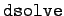 in ihren verschiedenen Formen bietet Maple die Möglichkeit, gewöhnliche Differentialgleichungen und Systeme symbolisch zu lösen. Die Lösung kann entweder als allgemeine Lösung oder als spezielle Lösung für vorgegebene Anfangsbedingungen erhalten werden. Die Lösung wird entweder explizit oder implizit als Funktion eines Parameters angegeben. Der Operator erlaubt als letztes Argument die in der folgende Tabelle dargestellten Optionen.
| 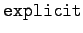 | liefert die Lösung, falls möglich, in expliziter Form |
| 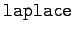 | verwendet die Laplace-Transformation zur Lösung |
| 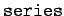 | benutzt die Zerlegung in Potenzreihen zur Lösung |
| 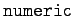 | liefert als Ergebnis eine Prozedur zur Berechnung numerischer Lösungswerte |
| 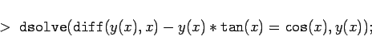 | (20.77a) |
| 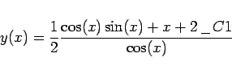 | (20.77b) |
Maple liefert die allgemeine Lösung mit einer Konstanten in expliziter Form. Im folgenden Beispiel wird die Lösung implizit angegeben, da die Auflösung der definierenden Gleichung nach y(x) nicht möglich ist. Die zusätzliche Option führt hier zu keinem Ergebnis.
| 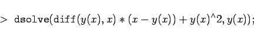 | (20.78a) |
| 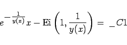 | (20.78b) |
Es wird die Differentialgleichung y'-ex-y2=0 mit y(0)=0 betrachtet. Hier wird die Option eingesetzt. Dabei ist zu beachten, daß diese Option die Anfangsbedingungen bei x=0 erwartet. Das gleiche gilt für die Option .
| 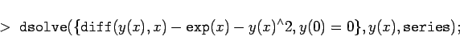 | (20.79a) |
| 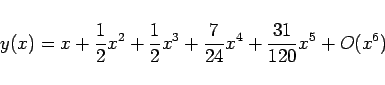 | (20.79b) |
Man erkennt, daß Gleichung und Anfangsbedingungen in geschweifte Klammern einzuschließen sind. Das gleiche gilt für die Behandlung von Systemen von Differentialgleichungen.